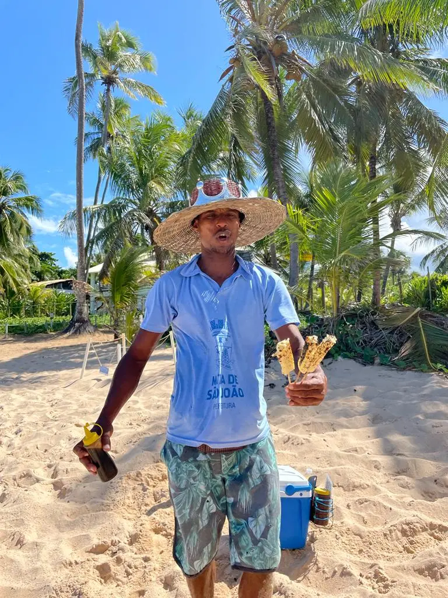

You've settled into your life abroad. You're learning the language, you've found your favourite café, the culture that once baffled you has started to feel ordinary. You've made friends, found your rhythm, maybe even stopped mentally converting prices. And then you go home — and everything falls apart again.
I write this having experienced this exact feeling more times than I can count. I'm Brazilian, I've lived in England, and I've spent many years in Florence. Every time I've returned to Brazil after a long absence, I've been hit by that disorienting mix of deep familiarity and strange newness. The smells are exactly right. The sounds are exactly right. And yet something feels off, like a song you know by heart played in the wrong key.
A stranger in a familiar land
The cruel irony of reverse culture shock is that it catches you off guard. You expected culture shock when you moved abroad — that made sense. But going home? Home is supposed to be easy. Home is supposed to be you. And when it isn't, when it feels foreign and strange and slightly too loud, it can be deeply unsettling.
What strikes me most when I return to Brazil is how much I notice things I simply couldn't see when I lived there. The chaos of the roads. The warmth of strangers. The extraordinary diversity of faces. The food — the extraordinary, unrepeatable food. When you live somewhere, you stop seeing it. The expat life gives you a strange gift: you get to see your home country the way a visitor would, with wide eyes and no assumptions.

Brazil will always be home. But home looks different after years away.
It's almost like visiting a place you've only ever seen in photographs — except you grew up there. You know exactly which drawer the cutlery is in at your mother's house, and yet the city feels like it belongs to someone else's life.
What your home country looks like from the outside
One of the most valuable things about reverse culture shock is the perspective it forces on you. When you've lived abroad and experienced being the foreigner — being the one who doesn't understand the joke, who mispronounces the street name, who gets the social cues just slightly wrong — you come home with an entirely different pair of eyes.
You realise, perhaps for the first time, that your home country is just as strange and specific and particular as everywhere else. You were just too close to see it.
Brazilians, I now notice, are extraordinarily curious about life outside Brazil. Everyone wants to know your story. What is Florence like? How do the Italians really live? Is the food as good as they say? This openness is one of the things I love most about my culture — and one of the things I took completely for granted when I lived there. You don't know what you have until you've spent years somewhere that keeps its emotions closer to the chest.
But not every culture responds this way. Some expats return home to find their compatriots surprisingly uninterested — even closed off — to the life they've been living. You want to share what you've seen and learned. You've changed. And they, quite reasonably, have continued their lives without you. That gap can feel enormous.
There is nothing quite like arriving somewhere that smells and sounds exactly right — and still feeling like a stranger.
The growth that happens in the discomfort
I've come to believe that reverse culture shock is one of the most important experiences in the expat journey — not because it's pleasant, but because of what it asks of you. It asks you to hold two versions of yourself at once: the person you were, and the person you've become. It asks you to love a place and also see it clearly. It asks you to belong somewhere, even when belonging feels complicated.
This is the kind of clarity that distance gives you, and it's genuinely hard to get any other way. When you've been the outsider, you stop being able to take your own culture on faith. You start to see the assumptions baked into ordinary life — the unspoken rules, the shared jokes, the things everyone just knows. And once you've seen them, you can't unsee them.
That shift in perspective is, I think, one of the most underacknowledged forms of identity change that expat life brings. It doesn't always feel like growth in the moment. It can feel like dislocation, like not quite fitting anywhere anymore — a feeling that can pass down through generations. But somewhere in that discomfort is a more generous, more curious, more open version of yourself.
When the disorientation lingers
Sometimes reverse culture shock passes quickly. You readjust, you fall back into old rhythms, you remember why you love the place. But sometimes it doesn't. Sometimes you return home and realise, quietly, that home has moved — that the place you carry in your heart and the place you actually come from have grown apart.
That realisation can be lonely. It can sit alongside joy and love and all the warmth of being back with family. It doesn't cancel those things out. But it deserves to be named.
If you find yourself feeling untethered — not quite at home abroad, and not quite at home at home — that is a real experience, and one that many expats never find the right words for. The invisible struggles of expat life rarely look dramatic from the outside, which makes them harder to talk about, not easier.
What I've found, both in my own life and in working with expat clients, is that naming it helps. Saying out loud: I feel like a stranger in the place I grew up. I've changed and I don't know if home has changed with me. I love this life I've built and I also grieve things I can't quite put my finger on. These things can be true at the same time. And talking to someone who understands the particular texture of expat life — not just the practical challenges, but the emotional ones — can make a real difference.